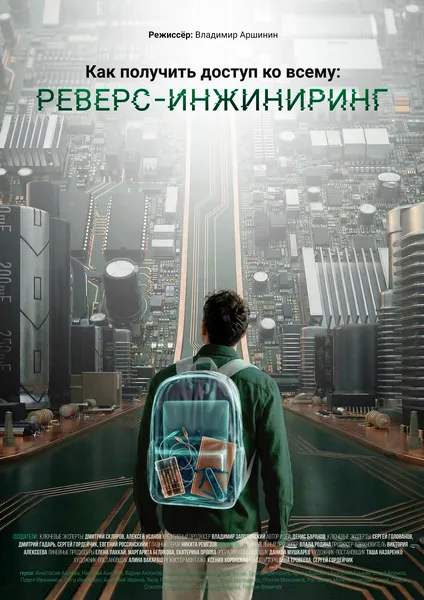

Как получить доступ ко всему: Реверс-инжиниринг
How to Access Everything: Reverse Engineering
2026
Документальный
Документальный фильм об обратной разработке как о ремесле и искусстве: о том, как исследователи разбирают чужое программное обеспечение, прошивки и аппаратные устройства, чтобы понять, как они работают на самом деле. От анализа вредоносного кода до восстановления принципиальных схем по фотографиям кристаллов — и вплоть до «серой» правовой зоны, где простой «взгляд внутрь» уже считается нарушением условий лицензии. Фильм о людях, для которых понимание системы важнее, чем её использование.
Описание на английском
A documentary about reverse engineering as a craft and an art: how researchers take apart other people's software, firmware and hardware to understand what they really do. From analyzing malicious code to reconstructing circuit diagrams from die photos — and into the legal gray zone where simply 'looking inside' already violates a license. A film about people for whom understanding a system matters more than using it.